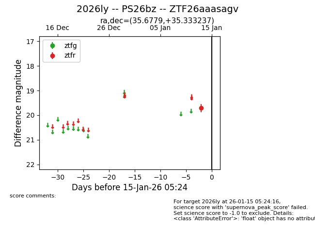
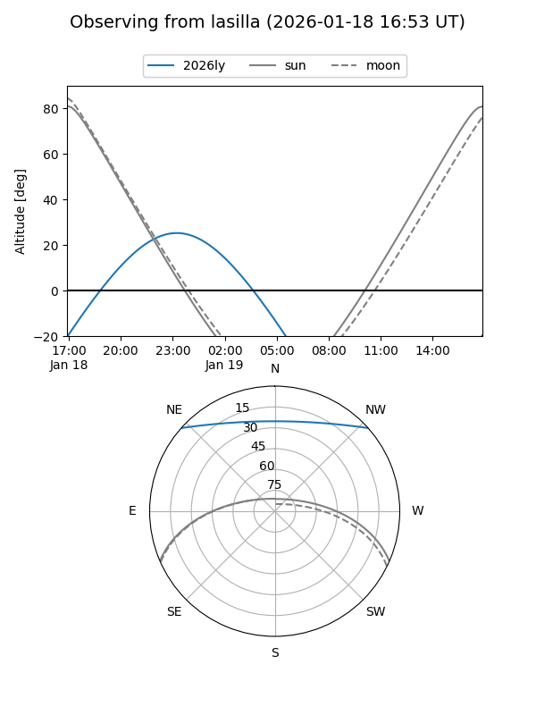
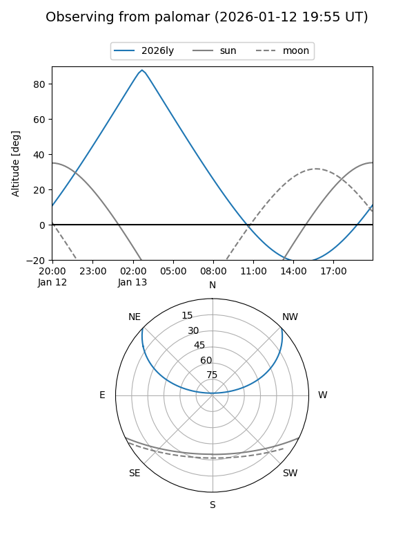
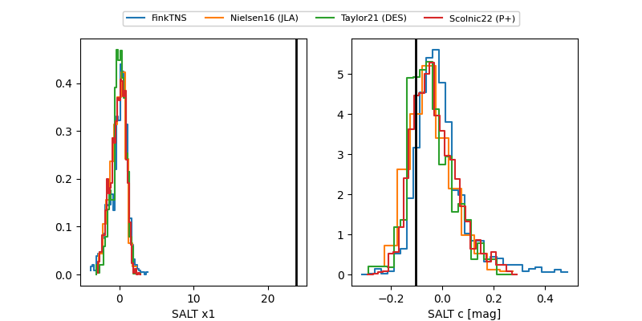

2026ly
Target 2026ly at 2026-01-23 05:41
Aliases and brokers:
FINK: link
Lasair: link
ALeRCE: link
TNS: link
YSE: link
alt names
ZTF26aaasagv (ztf,fink_ztf)
2026ly (tns,yse)
PS26bz (panstarrs)
Coordinates:
equatorial (ra, dec) = 35.6779,+35.33324
equatorial (HMS+DMS) = 02:22:42.69,+35:19:59.65
galactic (l, b) = (143.1817,-23.92389)
Flags:
Photometry:
last ztfg=19.50, ztfr=19.52
3 ztfg, 4 ztfr detections
Lightcurve

Visibility


Additional plots
